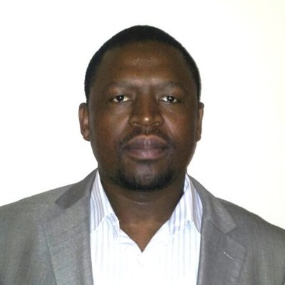
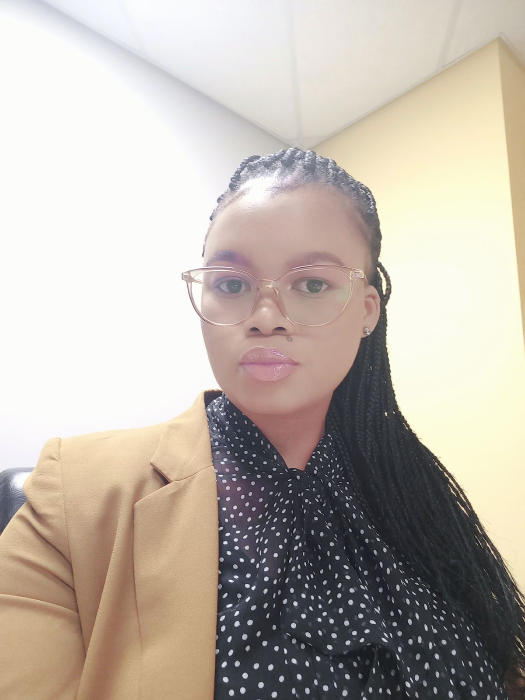
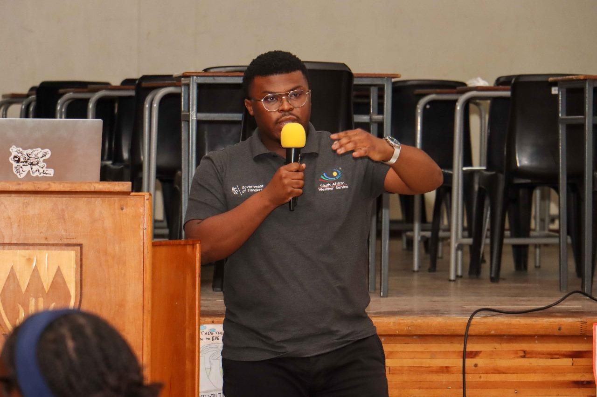
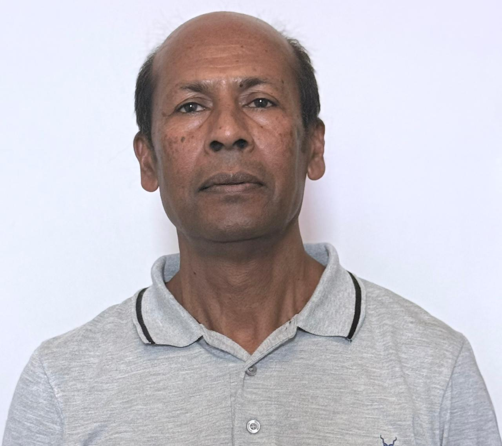

Workshop and Conference on Computational Mathematics and Modelling
About the Workshop
The Annual Workshop and Conference on Computational Mathematics and Modelling (WOCCOM2026) is designed as a five-day event. It includes a three-day workshop session that will give a review of climate modelling and the numerical modelling of climate problems, and a two-day conference where attendees present research findings.
The event aims to bridge the gap between theoretical concepts and practical applications, especially for postgraduate students and early-career academics. The event will be hosted at the University of KwaZulu-Natal and includes distinguished members of the scientific committee from various institutions.
Key Themes
- Large Language Models (LLMs)
- Climate Models
- Block-Hybrid Method
Conference and Workshop Flyer
Workshop Facilitators

Prof. Sandile Motsa
Biography
Professor Sandile Motsa is the Dean of the Faculty of Science and Engineering at the University of Eswatini,
with over 20 years of distinguished research and teaching experience. After working at the University of Swaziland
for about 10 years, Professor Motsa joined the University of KwaZulu-Natal (UKZN) in November 2011 as Associate Professor
of Applied Mathematics. He served five years at UKZN before returning to the University of Swaziland in December 2016,
where he led the Mathematics Department as the Head of the Department. In January 2019, he was elected Dean of the Faculty
of Science and Engineering, a role he continues to hold.
Professor Motsa also maintains visiting professorship positions at the University of KwaZulu-Natal and Wits University.
His research projects primarily focus on developing innovative numerical methods to solve intricate mathematical models
originating in various scientific and engineering disciplines. He is particularly passionate about employing technology
to tackle mathematical problems modeled as differential equations. With an extensive publishing record,
Professor Motsa has authored over 200 research articles in esteemed academic journals and contributed to more
than 10 book chapters in applied mathematics, physics, and engineering.
Beyond his academic commitments, Professor Motsa played an instrumental role in the Southern Africa
Mathematical Sciences Association (SAMSA), serving as Vice-President from 2014 to 2018, and President from 2019 to 2022.
He is also a founding member of the Kingdom of Eswatini Academy of Science (KEAS).
Professor Motsa's dedication to expanding mathematical sciences is not confined to the kingdom of Eswatini.
He has conducted over 20 workshops on Computational Methods in countries including Angola, Kenya, India,
Mozambique, and South Africa. With the advent of generative AI, offering infinite possibilities in teaching and research,
Professor Motsa's current research is venturing into the thrilling domains of artificial intelligence tools
and large language models. These explorations aim at enhancing mathematical modeling and numerical analysis research,
reflecting his continuous zeal to integrate technology into education and research.

Dr. Nosipho Zwane
Biography
Nosipho Zwane is a Lead Scientist in the Research and Development Department under the Climate Change
and Variability unit. She joined the South African Weather Service in 2014, Her research interests include
climate modelling, climate extremes, and the impact of climate change on climate sensitive sectors
(such as Energy, Agriculture, Water and Health). She holds a BSc with double major in Environmental &
Geographical Science and Ocean & Atmosphere Science, BSc Honors Specializing in Ocean & Atmosphere Science
both from the University of Cape Town. MSc and PhD in Meteorology from the University of Pretoria,
National Certificate in Generic Management from Edutel and Wits.
She has led and contributed to multiple revenue-generating projects, produced peer-reviewed research, and
actively positioned the South African Weather Service in strategic engagements with stakeholders both
nationally and internationally.

Mr. Siyabonga Nozwane
Biography
Siyanbonga Nozwane is a Climate Change and Variability Scientist at the South African Weather Service (SAWS)
and an MSc candidate in Interdisciplinary Global Change Studies at the Wits Global Change Institute.
His research focuses on regional climate change projections for South Africa using CMIP6 multi-model ensemble analysis,
with a particular interest in temperature and precipitation extremes under future warming scenarios.
He specializes in climate modelling, the development of Python-based analytical pipelines for large-scale
climate model outputs, and the translation of complex climate science into actionable information for policy and
planning across sectors. Alongside his technical work, Siyabonga is committed to bridging the gap between
climate science and the policy and planning decisions that shape how South Africa adapts to a changing climate.

Dr. Shina Daniel Oloniiju
Biography
Dr Shina Oloniiju is a Senior Lecturer in the Department of Mathematics at Rhodes University.
He holds a PhD in Applied Mathematics from the University of KwaZulu-Natal. His research focuses on
numerical methods, scientific computing, and, most recently, the development of machine learning architectures
for solving differential equations.
Alongside his teaching and research, Dr Oloniiju is actively involved in the mathematical research community,
publishing in reputable journals and supervising postgraduate students.
Plenary Speakers
Prof. Thando Ndarana
Biography
Thando Ndarana is a Professor of Meteorology at the University of Pretoria. As a dynamic meteorology
specialist, his research focuses on the dynamics of synoptic scale weather systems that produce extreme
weather events. He applies synoptic–dynamic meteorological diagnostics-such as potential vorticity,
wave activity fluxes, and atmospheric energetics and investigates dynamical processes including Rossby wave
propagation and breaking, to improve understanding of rain bearing weather systems over the southern African
domain and surrounding oceans. He is also interested in the influence of stratospheric dynamics on
regional weather and climate.
For his research, he has been awarded a C1 rating by the National Research Foundation. He was a member of
the editorial team that revised the monograph on the meteorology and climate of the southern hemisphere,
whose first and second editions were published in 1972 and 1998, respectively. He serves on the WWRP
working group on predictability and ensemble forecasting (PDEF), the WCRP CLIVAR Climate Dynamics Panel (CPD),
and the IAMAS International Commission on Dynamic Meteorology (ICDM).
Abstract
Title: The dynamics of extratropical weather systems affecting southern Africa
Idealized modelling studies have shown that baroclinic life cycles (BLCs), which begin with the vertical propagation of wave activity in the extratropics and its subsequent absorption or reflection in the subtropics as baroclinic waves dissipate, are critical for understanding the dynamics of extratropical weather systems. During the dissipation stage of BLCs, Rossby wave breaking (RWB) occurs and manifests as the rapid and irreversible overturning of potential vorticity contours. This RWB leads to the formation of important weather systems, such as cut-off low-pressure systems, which may occur over Namibia, Botswana, and South Africa. These systems are often associated with the ridging of the South Atlantic anticyclone at the lower levels, which is responsible for transporting moisture from the southwest Indian Ocean onto the southern african mainland. This moisture may extend as far into the subcontinent as Botswana.
In this presentation, we discuss these dynamical processes from the perspective of energy transfer, beginning with baroclinic conversion over the South Atlantic Ocean and the associated downstream development that eventually leads to the formation of cut-off lows and other weather systems. Developing studies at the University of Pretoria that address these processes directly from a finite-amplitude wave activity perspective will also be discussed in order to make a case for the BLC framework as a useful approach for understanding the weather and climate of southern Africa.

Prof. Montaz Ali
Biography
Prof Montaz Ali obtained his Ph.D. degree in stochastic global optimization from Loughborough University, U.K.
After two postdoctoral fellowship positions, respectively, in Plymouth University, UK, and in Abo Akademi in Finland,
he joined Computational and Applied Mathematics, University of the Witwatersrand. He was promoted to full professor
in April 2010. He was appointed as a Transnet sponsored research professor in Wits Transnet Centre of Systems Engineering,
Faculty of Engineering and Built Environment from 1st April-2013 to 31st March-2018.
At present he is a professor in optimization in the School of Computer Science and Applied Mathematics at Wits.
Prof Ali published research papers in various field of optimization, including global optimization, combinatorial and
discrete optimization, operations research, renewable energy, mixed integer nonlinear programming, and optimal
control theory. He is current pursuing his research in system identification, very large scale optimization
in graph and compress sensing.
Abstract
Title: A linear predictor of a non-linear dynamical systems with applications
This talk presents a new dynamic mode decomposition (DMD)-an equation-free technique for predicting the system dynamics. The technique does not require to know the underlying governing equations where the finite dimensional approximation of the Koopman operator plays a fundamental role. Our predictor is more general than its original counterpart. Unlike the original DMD which uses the pseudo-inverse technique for constructing the linear operator, we have used constrained optimization technique.
The new method proves its superiority over the original over longer time horizon. A control parameter is then introduced in the DMD as an interventional strategy for paediatric growth monitoring. The linear operator and the parameters of the control are obtained from data generated from a neural ode while the control values are obtained under the model predictive strategy. Both model have been validated using test cases.

Dr. Olumuyiwa Otegbeye
Biography
Dr. Otegbeye is a senior lecturer in the school of computer science and applied mathematics, at the University of the
Witwatersrand. He holds a PhD in applied mathematics with a focus on spectral-based numerical methods for
solving boundary layer fluid flow problems.
His research interest is focused on the development and modification of computational and numerical methods for
solving complex nonlinear systems of differential equations (ordinary, partial, fractional) that model several
real-world processes. He is also interested in the modelling and analysis of epidemiological models, and the
application of optimization in real-world problems that involve scarce resources. His work has been published in
several reputable journals and international conference proceedings.
Abstract
Title: To be communicated
.
.
Thank You to Our Sponsor
We gratefully acknowledge the generous support of our sponsor.